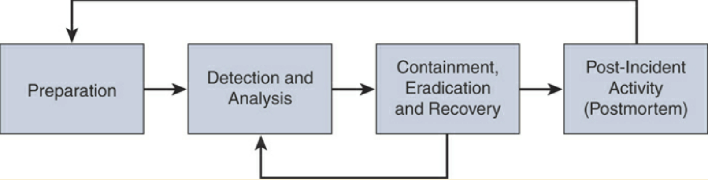

Digital Forensics and Incident Response¶
Many, many more diverse cybersecurity-related incidences have come about nowadays.
Disruptive & Damaging, can take down a whole company.
Must respond quickly to minimise harm & uphold laws.
ISO/IEC 27002:2013 and NIST Incident Response Guidance¶
A consistent and effective approach to the management of information security incidents, including communication on security events and weaknesses:
SP 800-61 Revision 2: “Computer Security Incident Handling Guide”
SP 800-83: “Guide to Malware Incident Prevention and Handling”
SP 800-86: “Guide to Integrating Forensic Techniques into Incident Response”
Incidences:
Drain resources.
Are expensive.
Disrupt business from businesses.
Must be identified before vulnerabilities are exploited.
Must be avoided by improving security posture.
Must be avoided via assessment of risk, threat, threat sources, and vulnerabilities.
Risk:
Can be mitigated or avoided.
Occurs when people are involved (which is always).
Cannot be avoided by things out of company’s control
Cannot be avoided by people with malicious intent.
Can be reduced if we prepare.
Incident preparedness:
Involves having policies, strategies, plans & procedures.
Involves companies writing guidelines & documentation, training staff, & “fire” drills.
Is being ready to act quickly and make swift decisions.
Incident response:
Is critical.
Can be complex.
Involves planning & resources.
An incident handling guide by NIST:
view here/ view online
Incident response benefits:
Calm and systematic response
Minimization of loss or damage
Protection of affected parties
Compliance with laws and regulations
Preservation of evidence
Integration of lessons learned
Lower future risk and exposure
Incident Definition¶
A cybersecurity incident is an adverse event that threatens business security and/or disrupts service (loss of CIA). It is not a disaster, which is widespread damage/destruction, loss of life, or drastic change to envirmonment.
Incident examples:
Exposure or modification of legally protected data
Unauthorized access to intellectual property
Disruption of internal/external services.
Attacker sends a crafted packet to a router and causes a denial-of-service condition.
Attacker compromises a point-of-sale (POS) system and steals credit card information.
Attacker compromises a hospital database and steals thousands of health records.
Ransomware is installed in a critical server and all files are encrypted by the attacker.
Incident management:
Create organisation-specific definition of incident.
Create a mandatory response process.
3rd partys, vendors & business partners, etc. must be contractually obligated to notify organisation when incident occurs.
Events vs Incidents:
From NIST Special Publication 800-61: “An event is any observable occurrence in a system or network. Events include a user connecting to a file share, a server receiving a request for a web page, a user sending email, and a firewall blocking a connection attempt. Adverse events are events with a negative consequence, such as system crashes, packet floods, unauthorized use of system privileges, unauthorized access to sensitive data, and execution of malware that destroys data.”
“a computer security incident is a violation or imminent threat of violation of computer security policies, acceptable use policies, or standard security practices.”
False Positives, False Negatives, True Positives, and True Negatives¶
A false positive is a situation when security device triggers an alarm, but there is no malicious activity or attack. “Crying wolf”
A false negative is when a device is unable to detect true security events / malicious activity isn’t detected by the device.
A true positive is a successful identification of malicious activity.
A true negative is when a device allows the malicious activity.
Evasion techniques against traditional IDS and IPS devices:
Fragmentation: When the attacker evades the IPS box by sending fragmented packets.
Using low-bandwidth attacks: When the attacker uses techniques that use low bandwidth or a very small number of packets in order to evade the system.
Address spoofing/proxying: Using spoofed IP addresses or sources, as well as using intermediary systems such as proxies to evade inspection.
Pattern change evasion: Attackers may use polymorphic techniques to create unique attack patterns.
Encryption: Attackers can use encryption to hide their communication and information.
Incident Severity Levels¶
Levels are based upon:
operational, reputational, and legal impact to the organisation.
Incident Reporting¶
Implement simple mechanisms that all employees can use.
Employees to report all real & suspected incidents, but not security level.
People are afraid of being wrong or looking foolish or don’t care. Management must encourage.
People who report incidents (even if false positive) must be praised instead of ridiculed.
Evidence:
Digital forensic evidence is any information in digital form that can be processed by computing device or stored on other media. This evidence is classified as witness testimony/direct evidence or indirect, such as document, etc.
Cybersecurity forensic evidence can be contaminated and so the targeted machine can be imaged (physical copy of data, bit for bit) to preserve exploit state. Avoid Electrostatic Discharge (ESD) from damaging evidence.
Chain of custody:
How evidence is collected
When it was collected
How it was transported
How it was tracked
How it was stored
Who had access to the evidence and how it was accessed
Incident Response Program¶
An IRP contains policies, plans, procedures, and people, which provide well-defined and organised approach for handling incidents and taking action when incidents are traced back to company.
Incident Response Plan¶
NIST Special Publication 800-61 Revision 2 include the following:
Statement of management commitment
Purpose and objectives of the incident response policy
The scope of the incident response policy
Definition of computer security incidents and related terms
Organisational structure and definition of roles, responsibilities, and levels of authority
Prioritisation or severity ratings of incidents
Performance measures
Reporting and contact forms
NIST’s incident response plan elements include the following:
Incident response plan’s mission
Strategies and goals of the incident response plan
Senior management approval of the incident response plan
Organisational approach to incident response
How the incident response team will communicate with the rest of the organisation and with other organisations
Metrics for measuring the incident response capability and its effectiveness
Roadmap for maturing the incident response capability
How the program fits into the overall organisation
NIST also defines standard operating procedures (SOPs) as “a delineation of the specific technical processes, techniques, checklists, and forms used by the incident response team. SOPs should be reasonably comprehensive and detailed to ensure that the priorities of the organization are reflected in response operations.”
Incident Response Process¶
Phases of Incident Response Process:
Preparation¶
Creating processes for incident handler communications and the facilities that will host the security operation centre (SOC) and incident response team
Making sure that the organisation has appropriate incident analysis hardware and software as well as incident mitigation software
Creating risk assessment capabilities within the organisation
Making sure the organisation has appropriately deployed host security, network security, and malware prevention solutions
Developing user awareness training
Detection & Analysis¶
Profile networks and systems.
Understand normal behaviours.
Create a log retention policy.
Perform event correlation.
Maintain and use a knowledge base of information.
Use Internet search engines for research.
Run packet sniffers to collect additional data.
Filter the data.
Seek assistance from others.
Keep all host clocks synchronised.
Know the different types of attacks and attack vectors.
Develop processes and procedures to recognise the signs of an incident.
Understand the sources of precursors and indicators.
Create appropriate incident documentation capabilities and processes.
Create processes to effectively prioritise security incidents.
Create processes to effectively communicate incident information (internal and external communications).
Containment, Eradication, & Recovery¶
Evidence gathering and handling
Identifying the attacking hosts
Choosing a containment strategy to effectively contain and eradicate the attack, as well as to successfully recover from it
The potential damage to and theft of resources
The need for evidence preservation
Service availability (for example, network connectivity as well as services provided to external parties)
Time and resources needed to implement the strategy
Effectiveness of the strategy (for example, partial containment or full containment)
Duration of the solution (for example, emergency workaround to be removed in four hours, temporary workaround to be removed in two weeks, or permanent solution)
Postmortem¶
Exactly what happened, and at what times?
How well did the staff and management perform while dealing with the incident?
Were the documented procedures followed?
Were they adequate?
What information was needed sooner?
Were any steps or actions taken that might have inhibited the recovery?
What would the staff and management do differently the next time a similar incident occurs?
How could information sharing with other organisations be improved?
What corrective actions can prevent similar incidents in the future?
What precursors or indicators should be watched for in the future to detect similar incidents?
What additional tools or resources are needed to detect, analyse, and mitigate future incidents?
Simulations and Playbooks¶
Good for gap analysis of response processes & procedures, create playbooks, which contains:
Report identification
Objective statement
Result analysis
Data query/code
Analyst comments/notes
Methodology of Playbooks:
Preparation: Identify the audience, what you want to simulate, and how the exercise will take place.
Execution: Execute the simulation and record all findings to identify all areas for improvement in your program.
Report: Create a report and distribute it to all the respective stakeholders. Narrow your assessment to specific facets of incident response. You can compare the results with the existing incident response plans. You should also measure the coordination among different teams within the organization and/or external to the organization. Provide a good technical analysis and identify gaps.
Information Sharing and Coordination¶
Communicate with outside parties regarding incidents:
law enforcement
media inquiries
external expertise
ISPs
vendor of hardware & software
incident response teams
industry pears
Incident response plan interaction types:
PR department, legal department, upper management
avoid leaking sensitive info about incident to unauthorised parties (additional financial loss)
list contacts & communications of & with external entities for evidence sake
Computer Security Incident Response Teams¶
Computer Security Incident Response Team (CSIRT) (/infosec)
Product security incident response team (PSIRT)
National CSIRT and computer emergency response team (CERT)
Coordination center The incident response team of a security vendor
managed security service provider (MSSP)
Creating a CSIRT:
https://www.cert.org/incident-management/csirt-development/csirt-faq.cfm.
Defining the CSIRT constituency
Who will be the “customer” of the CSIRT?
What is the scope? Will the CSIRT cover only the organization or also entities external to the organization? For example, at Cisco, all internal infrastructure and Cisco’s websites and tools (that is, cisco.com) are the responsibility of the Cisco CSIRT, and any incident or vulnerability concerning a Cisco product or service is the responsibility of the Cisco PSIRT.
Will the CSIRT provide support for the complete organization or only for a specific area or segment? For example, an organization may have a CSIRT for traditional infrastructure and IT capabilities and a separate one dedicated to cloud security.
Will the CSIRT be responsible for part of the organization or all of it? If external entities will be included, how will they be selected?
Ensuring management and executive support
Making sure that the proper budget is allocated
Deciding where the CSIRT will reside within the organization’s hierarchy
Determining whether the team will be central, distributed, or virtual
Developing the process and policies for the CSIRT
Incident classification and handling
Information classification and protection
Information dissemination
Record retention and destruction
Acceptable usage of encryption
Engaging and cooperating with external groups (other IRTs, law enforcement, and so on)
Hiring policy
Using an outsourcing organization to handle incidents
Working across multiple legal jurisdictions
Resources for creating a CSIRT:
ISO/IEC 27001:2005: “Information Technology—Security Techniques—Information Security Management Systems—Requirements”
ISO/IEC 27002:2005: Information Technology—Security Techniques—Code of Practice for Information Security Management”
ISO/IEC 27005:2008: “Information Technology—Security techniques—Information Security Risk Management”
ISO/PAS 22399:2007: “Societal Security—Guidelines for Incident Preparedness and Operational Continuity Management”
ISO/IEC 27033: Information Technology—Security Techniques—Information Security Incident Management
Product Security Incident Response Teams (PSIRTs)¶
The Common Vulnerability Scoring System (CVSS)¶
Base, temporal, and environment scores (scoring from 0 [least severe] to 10 [highly critical]).
Maintained by Forum of Incident Response & Security Teams (FIRST) (https://www.first.org/cvss/v3.1/examples.) (https://www.first.org/cvss).
Vulnerabilities are evaluated by:
The base group represents the intrinsic characteristics of a vulnerability that are constant over time and do not depend on a user-specific environment. This is the most important information and the only one that’s mandatory to obtain a vulnerability score.
The temporal group assesses the vulnerability as it changes over time.
The environmental group represents the characteristics of a vulnerability, taking into account the organizational environment.
Takeaway points:
Exploits cannot exist without vulnerabilities, but there are not always exploits with vulnerabilities (theoretical vulnerabilities).
Never deprioritise vulnerabilities because they have not been exploited yet.
You cannot patch all vulnerabilities. Secure Development Lifecycles (SDL) are vital. https://www.cisco.com/c/en/us/about/security-center/security-programs/secure-development-lifecycle.html
Secure Development Lifecycles¶
SDLs are “a repeatable and measurable process we’ve designed to increase the resiliency and trustworthiness of our products.” SDLs are the tools & processes designed to accelerate product development methodologies (secure, resilient, & trustworthy systems).:
Base product security requirements
Third-party software (TPS) security
Secure design
Secure coding
Secure analysis
Vulnerability testing
Exploitability Metrics¶
Attack Vector (AV) [level of access an attacker needs]:
Network (N)
Adjacent (A)
Local (L)
Physical (P)
Attack Complexity (AC) [conditions beyond the attacker’s control]:
Low (L)
High (H)
Privileges Required (PR) [level of privileges an attacker must have]:
None (N)
Low (L)
High (H)
User Interaction (UI) [whether UI is needed]
None (N)
Required (R)
Scope (S) [impact on systems]:
Unchanged (U)
Changed (C)
Impact Metrics¶
Confidentiality (C) [impact to confidentiality]:
Low (L)
Medium (M)
High (H)
Integrity (I) [impact to integrity]:
Low (L)
Medium (M)
High (H)
Availability (A) [impact to availability]:
Low (L)
Medium (M)
High (H)
Temporal Group Metrics¶
Exploit Code Maturity (E), which measures whether or not public exploit is available
Remediation Level (RL), which indicates whether a fix or workaround is available
Report Confidence (RC), which indicates the degree of confidence in the existence of the vulnerability
Environmental Group Metrics¶
Security Requirements (CR, IR, AR), which indicate the importance of confidentiality, integrity, and availability requirements for the system
Modified Base Metrics (MAV, MAC, MAPR, MUI, MS, MC, MI, MA), which allow the organization to tweak the base metrics based on specific characteristics of the environment
National CSIRTs and Computer Emergency Response Teams (CERTs)¶
Examples of teams:
“US-CERT’s critical mission activities include:
Providing cybersecurity protection to Federal civilian executive branch agencies through intrusion detection and prevention capabilities.
Developing timely and actionable information for distribution to federal departments and agencies; state, local, tribal and territorial (SLTT) governments; critical infrastructure owners and operators; private industry; and international organizations.
Responding to incidents and analyzing data about emerging cyber threats.
Collaborating with foreign governments and international entities to enhance the nation’s cybersecurity posture.”
Coordination Centres¶
“CERT Division of the Software Engineering Institute (SEI), we study and solve problems with widespread cybersecurity implications, research security vulnerabilities in software products, contribute to long-term changes in networked systems, and develop cutting-edge information and training to help improve cybersecurity.
“We are more than a research organization. Working with software vendors, we help resolve software vulnerabilities. We develop tools, products, and methods to help organizations conduct forensic examinations, analyze vulnerabilities, and monitor large-scale networks. We help organizations determine how effective their security-related practices are. And we share our work at conferences; in blogs, webinars, and podcasts; and through our many articles, technical reports, and white papers. We collaborate with high-level government organizations, such as the U.S. Department of Defense and the Department of Homeland Security (DHS); law enforcement, including the FBI; the intelligence community; and many industry organizations.
“Working together, DHS and the CERT Division meet mutually set goals in areas such as data collection and mining, statistics and trend analysis, computer and network security, incident management, insider threat, software assurance, and more. The results of this work include exercises, courses, and systems that were designed, implemented, and delivered to DHS and its customers as part of the SEI’s mission to transition SEI capabilities to the public and private sectors and improve the practice of cybersecurity.”
Key Incident Management¶
Incident Management Personnel:
Incident Response Coordinators (IRC) (verify & log incidents)
Designated incident handlers
Incident response team members
Designated Incident Handeler (DIH) (senior personnel with crisis managemnt & comm skills - incident declaration, liason with execs & managing IRT)
IRT tasks:
Overall management of the incident
Triage and impact analysis to determine the extent of the situation
Development and implementation of containment and eradication strategies
Compliance with government and/or other regulations
Communication and follow-up with affected parties and/or individuals
Communication and follow-up with other external parties, including the board of directors, business partners, government regulators (including federal, state, and other administrators), law enforcement, representatives of the media, and so on, as needed
Root cause analysis and lessons learned
Revision of policies/procedures necessary to prevent any recurrence of the incident